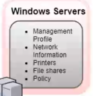
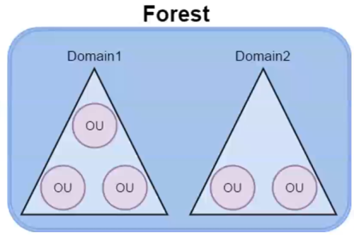

components & Structure
Components• Schema → Defines object and their attributes
example: • Query and index mechanism → Provides searching and publication of objects and their properties
• Global Catalog → Contains information about every object in the directory
• Replication Service → Distributes information across domain controllers
Structure•
Forests,
Domains and
Organization Units (OUs) are the basic building blocks of any active directory structure
◇ A forest (which is a security boundary) may contain multiple domains and each domain may contain multiple OUs
